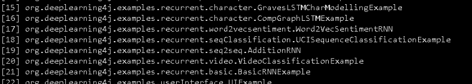
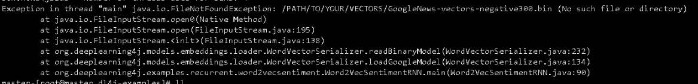
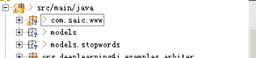
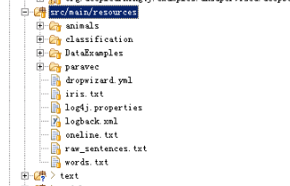

最近在学习deeplearning4j，简称为dl4j。其中有许多示例，可以编译源码以后，运行runexample.sh来查看相关的结果。其中有分词的例子，所以想要学习一下分词，特别是中文分词的实例。
关于中文分词，比较好的一个例子就是DeepLearning4J入门——让计算机阅读《天龙八部》，版主也想要研究一下该例子，并通过学习加深对分词的理解。
环境
版主使用的环境，基本上与原文作者使用的类似：
- Eclipse：导入dl4j-examples.git；
- Windows7系统：单台CPU机器；
- Maven3：主要用于FNLP的编译，获取fnlp-core的JAR包，当然也可以直接下载百度云盘上的JAR包。
dl4j自带自带实例
感兴趣的朋友，可以下载dl4j-examples的源码，自己动手编译源码运行一下。dl4j分词的实例，主要是【17】这一个例子：

刚开始，可能需要下载数据，大约为80M左右，同时需要研究原代码，因为直接运行的话会报错：

版主写此文时，可以在网上找到该缺失文件，地址为： GoogleNews-vectors-negative300。
中文分词学习
参考引文的代码，可以完成编译。值得注意的是，版主在编译的时候遇到几个问题：
- 直接下载【天龙八部】，用Eclipse直接打开，发现时乱码。将文本的格式设置为UTF-8无BOM以后，可以正常显示；
- 使用MAVEN下载FNLP-CORE时，发现速度非常慢。可以直接到FNLP的百度云盘下载相关JAR包，或自行编译FNLP源码得到JAR包，然后再本地使用mvn install:install-fiile安装到本地库中；
- 关于代码运行的顺序问题：首先运行processFile的代码，这样可以通过tlbb.txt生成分词文件tlbb_t.txt；然后通过ZhWord2Vector来获得结果。
为了后来学习者减少雷区，版主将Eclipse工程结构送上：


版主的结构与原文类似，但有一些差异，各种差异读者可自行体会_^_。
分词的结果，与参考文中的结果也略有差异，如果有知晓原因的，请告诉版主：

版主使用的训练参数：
minWordFrequency(10).iterations(4).layerSize(100).seed(45).windowSize(5)